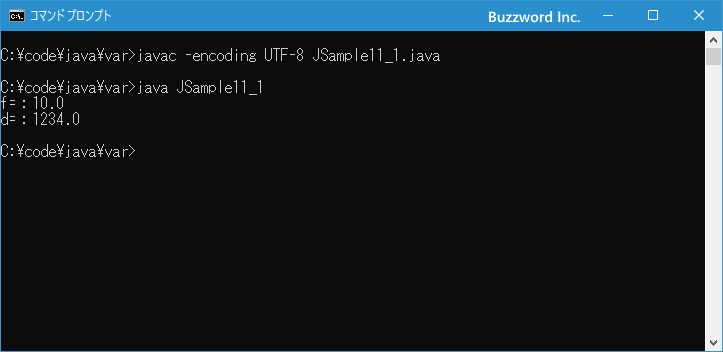

キャスト演算子と型変換ルール
Java は変数に格納できる型が決まっていますが、数値型の場合には異なる型であっても代入できる場合があります。またそのまま代入できない場合にもキャスト演算子と呼ばれる型を変換する演算子を使用することで代入できる場合っがあります。ここでは Java における型変換が行われるルールと、キャスト演算子の使い方について解説します。
目次
型変換のルール
Java は変数を定義するときに型を指定するプログラミング言語です。その為、宣言したときと異なるデータ型の値を代入することはできません。例えば int 型の変数に対して String 型の文字列を代入する場合、コンパイルを行うと「エラー: 不適合な型: Stringをintに変換できませんというエラーになります。
int i; i = "Hello"; // コンパイルエラー
ただ int や double などの数値のデータ型に対して、扱う範囲が広いデータ型に対して扱う範囲が狭いデータ型の値を代入する場合はエラーとはなりません。例えば double 型の変数に対して int 型の値を代入する場合はコンパイルもエラーとはなりません。
double d; d = 100;
このとき int 型の値が double 型に自動的に型変換が行われています。
逆に int 型の変数に対して double 型の値を代入する場合、コンパイルを行うと「エラー: 不適合な型: 精度が失われる可能性があるdoubleからintへの変換」というエラーになります。
int i; i = 100.0; // コンパイルエラー
もし int 型の値に long 型や double 型の値を代入しようとする場合は、明示的に型変換を行うための キャスト演算子を使用しなければなりません。
このあと、どのような場合に自動的に型変換が行われるのか、そして明示的に型変換を行う場合の手順と注意点について解説していきます。
自動的な型変換(拡大変換)
扱う範囲が広いデータ型に対して扱う範囲が狭いデータ型の値を代入する場合に自動的な型変換が起こります。自動的な型変換のことを拡大変換とも言います。
どのデータ型からどのデータ型へ代入したときに自動的な型変換が起こるのかは次の一覧をみてください。
| 変更元 | 変更先 |
|---|---|
| byte | short,int,long,float,double |
| short | int,long.float,double |
| int | long,float,double |
| long> | float,double |
| float | double |
| double | -- |
| char | int,long,float,double |
扱える数値の範囲の大きさでいうと、 double > float > long > int > short > bye なので、より扱う範囲が広いデータ型へ代入を行ったときは自動的な型変換が行われます。
なお char 型が扱える数値が 0～65535 で byte 型が扱える数値が -128～128 です。負の値を char 型が扱えないため byte 型から char 型への自動的な変換が行われません。また char 型の正の最大値が byte 型の正の最大値を超えるため、 char 型から byte 型への自動変換も行われません。
また short 型が扱える数値が -32768～32767 です。先ほどと同じ理由で負の値を char 型が扱えないため short 型から char 型への自動的な変換が行われません。また char 型の正の最大値が short 型の正の最大値を超えるため、 char 型から short 型への自動変換も行われません。
基本データ型の boolean についてはいずれのデータ型に対しても自動的な型変換は行われません。
それでは簡単なサンプルプログラムを作って試してみます。テキストエディタで次のように記述したあと、 JSample11-1.java という名前で保存します。
class JSample11_1{
public static void main(String[] args){
float f = 10;
double d = 1234L;
System.out.println("f=：" + f);
System.out.println("d=：" + d);
}
}
コンパイルを行います。
javac -encoding UTF-8 JSample11_1.java
その後で、次のように実行してください。
java JSample11_1

float 型の変数に int 型の値を代入し、 double 型の変数に long 型の値を代入しましたがコンパイルも問題なくプログラムの実行も正常に行うことができました。
intやlongからfloatやdoubleへ変換するときの注意点
自動変換によって int 型の値は float 型や double型の変数に代入できますし、 long 型の値は double 型の変数に代入することができますが、代入する数値によっては注意が必要です。
例えば float 型の値は負の値は -3.4028235E+38 ～ -1.401298E-45、正の値は 1.401298E-45 ～ 3.4028235E+38 の範囲の値を表現できます。ただ float 型や double 型には有効桁数というものがあり、 float 型ではおよそ 10 進数で 7 桁( 2 進数で 24 桁)、 double 型では 10 進数でおよそ 16 桁( 2 進数で 53 桁)となっています。
有効桁数とは表示された数値の中で信頼できる値が何桁あるのかということであり、もしも有効桁数が 3 桁であれば 12.345 という数値で信頼できるのは 12.3 まででそれ以降の数値には誤差が含まれている可能性があります。また 1.2345 という数値であれば信頼できるのは 1.23 まででそれ以降の数値には誤差が含まれている可能性があります。
このため、 long 型の値で7桁より大きい数値を float 型の値に変換すると変換は行われますが 7 桁以降の数には誤差が含まれる可能性があります。同じように 15 桁以上の大きい数値を double 型の値に変換した場合も誤差が含まれる可能性があります。同じように int 型の値を float 型に代入した場合も 7 桁以降は誤差が含まれる可能性があります。
次のサンプルをみてください。
class JSample11_2{
public static void main(String[] args){
int i1 = 123456789;
float f1 = i1;
System.out.println("i1=：" + i1);
System.out.println("f1=：" + f1);
long l2 = 1234567890123456789L;
float f2 = l2;
double d2 = l2;
System.out.println("l2=：" + l2);
System.out.println("f2=：" + f2);
System.out.println("d2=：" + d2);
}
}
コンパイルを行ったあとで実行してみると次のような実行結果となります。
>java JSample11_2 i1=：123456789 f1=：1.23456792E8 l2=：1234567890123456789 f2=：1.23456794E18 d2=：1.23456789012345677E18 >
最初は int 型の値を float 型の変数に代入した場合です。自動変換は行われて代入は行われますが誤差が発生しています。また long 型の値を floata 型と double 型の変数に代入した場合も、自動変換された代入された値には誤差が含まれています。
このように自動変換が行われる場合でも、桁数が大きい値を代入する場合には注意が必要です。
キャスト演算子を使った縮小変換
扱う範囲が狭いデータ型に対して扱う範囲が広いデータ型の値を代入すると、コンパイル時にエラーが発生します。ただ絶対に代入できないわけではありません。明示的に型変換を行うことを記述することで、例えば double 型のデータを int 型の変数に代入することもできます。
明示的な型変換を行うときに使用するのかキャスト演算子です。書式は次のとおりです。
(データ型)変数
変数を型変換するデータ型を ( と ) の間に記述します。
例えば double 型の値を int 型の変数に代入するには次のようにキャスト演算子を使って int 型に明示的に型変換してから代入します。
double d = 100.0; int i = (int)d;
どのデータ型からどのデータ型へ代入するときにキャスト演算子を使った明示的な型変換が必要なのかは次の一覧をみてください。
| 変更元 | 変更先 |
|---|---|
| byte | char |
| short | char,byte |
| int | char,byte,short |
| long> | char,byte,short,int |
| float | char,byte,chort,int,long |
| double | char,byte,chort,int,long,float |
| char | byte,short |
自動的な型変換が起こるケースとちょうど逆になります。
なお式の中で演算の優先順位を変更する場合にも ( と ) を使いますが、括弧の中がデータ型だった場合はキャスト演算子となります。キャスト演算子の優先順位は比較的高いので記述する場合はどの部分にキャスト演算子が影響するのか注意して下さい。(演算子の優先順位については「演算子の優先順位と結合規則」を参照下さい)。
それでは簡単なサンプルプログラムを作って試してみます。テキストエディタで次のように記述したあと、 JSample11-1.java という名前で保存します。
class JSample11_3{
public static void main(String[] args){
double d = 123.0;
int i = (int)d;
float f = (float)d;
System.out.println("d=：" + d);
System.out.println("i=：" + i);
System.out.println("f=：" + f);
}
}
コンパイルを行います。
javac -encoding UTF-8 JSample11_3.java
その後で、次のように実行してください。
java JSample11_3
long 型の変数と double 型の変数にキャスト演算子を使って int 型の値を代入しましたがコンパイルも問題なくプログラムの実行も正常に行うことができました。
longからintやdoubleからintへ変換するときの注意点
キャスト演算子を使って扱う範囲が狭いデータ型に対して扱う範囲が広いデータ型の値を代入するとき、場合によっては入りきらない値を代入してしまう可能性があります。例えば int 型の変数に int 型では扱えない大きな long 型の値を代入したときや、小数点を扱えない int 型の変数に float 型の値を代入した場合です。
次のサンプルをみてください。
class JSample11_4{
public static void main(String[] args){
long l1 = 1234567890123456789L;
int i1 = (int)l1;
float f2 = 123.45f;
int i2 = (int)f2;
System.out.println("l1=：" + l1);
System.out.println("i1=：" + i1);
System.out.println("f2=：" + f2);
System.out.println("i2=：" + i2);
}
}
コンパイルを行ったあとで実行してみると次のような実行結果となります。
>java JSample11_4 l1=：1234567890123456789 i1=：2112454933 f2=：123.45 i2=：123 >
いずれもエラーとなることはありませんが、 int 型の範囲を超えた long 型の値を代入した場合にどのような結果になるのかは分かりません。小数点がある値を int 型の変数に代入した場合は小数点以下が切り捨てられて代入されるようです。
このようにキャスト演算子を使って代入を行う場合には、代入される値が代入する変数のデータ型の範囲を超えてしまう場合、予期せぬ結果になりますのでご注意ください。
数値リテラルを代入する場合の自動変換
例えば int 型の値を short 型や byte 型の変数に代入する場合はキャスト演算子を使った明示的な変換が必要ですが、数値リテラルを代入する場合に限って自動的な変換になる場合があります。
short s = 10; byte b = 10; char c = 10;
数値リテラルで整数を記述した場合は int 型の値となります。 int 型の値を short 型や byte 型の変数に代入する場合であっても、数値リテラルを直接代入する場合はキャスト演算子を使わなくてもそのまま代入することができます。
自動変換されるのは数値リテラルを直接代入した場合だけです。いったん変数に格納した値を代入することはできません。
int i = 10; byte b = i; // エラー
また数値リテラルを直接代入する場合であっても、代入先の扱える範囲を超えた大きな数値を代入することはできません。
byte b = 1000; // エラー
どちらもコンパイルの時に「エラー: 不適合な型: 精度が失われる可能性があるintからbyteへの変換」というエラーが発生します。
-- --
Java における型変換が行われるルールと、キャスト演算子の使い方について解説します。
( Written by Tatsuo Ikura )

著者 / TATSUO IKURA
初心者～中級者の方を対象としたプログラミング方法や開発環境の構築の解説を行うサイトの運営を行っています。